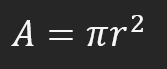
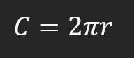

Enter the radius in the box below.
{% if radius-%}A circle with a radius {{ radius }} has the following metrics:
{%- endif %} {% if area -%}The area is: {{ area }} units squared
{%- endif %} {% if circumference -%}The circumference is: {{ circumference }} units
{%- endif %}The area of a circle is defined as:
The circumference of a circle is defined as:
